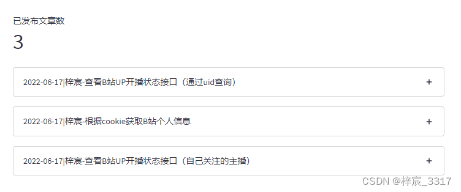
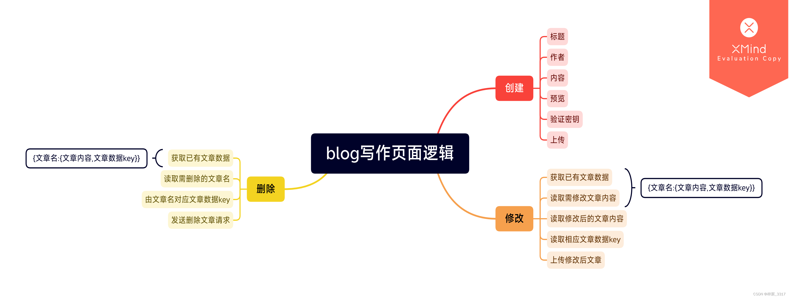
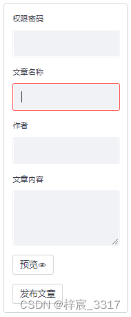
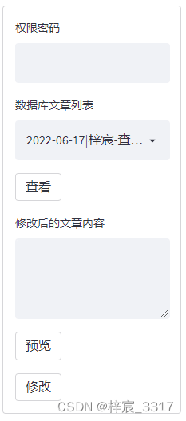

pip install deta,requests,streamlit
deta==1.1.0
requests==2.25.1
streamlit==1.10.0
上代码
# 链接数据库
deta = Deta(st.secrets["deta_key"])
db = deta.Base('你的数据库的名字（如果没有则会创建）')
# 获取数据库表头（字典形式）
Article_Data = db.fetch().items
st.metric('已发布文章数', len(Article_Data))
try:
for i in Article_Data:
with st.expander(i['name']):
st.markdown(i['hometown'])
except ValueError:
pass
except KeyError:
pass
db.fetch().items 函数会遍历整个数据库并返回所有数据
返回的数据类型是列表，即以下结构
[
{"name":"","age":"","hometown":""},
{"name":"","age":"","hometown":""}
]
# 说明:一条数据对应一个字典
| Key | Value | 类型 |
|---|---|---|
| name | string | |
| age | int | |
| hometown | string | |
| key | string |
Deta官方给出的四个变量中，name、age、hometown是我们可以操作的，
而key是当我们在数据库中创建每条数据时系统派发的唯一的“身份证号码”，后续对这条数据的修改，删除也需要用到key
st.metric('已发布文章数', len(Article_Data))
由于一条数据对应一个字典，所以直接使用len()函数统计返回的列表内元素总数即文章总数
for i in Article_Data:
with st.expander(i['name']):
st.markdown(i['hometown'])
通过for语法循环创建用于存放文章的容器，可以实现自动化


# 获取数据库数据 [{}]
Article_Dict = {}
try:
Article_Data = db.fetch().items
for i in Article_Data:
Article_Dict[i['name']] = {'key': i['key'],
'content': i['hometown']}
except KeyError:
pass
except ValueError:
pass
#创建 页面组件
with st.form('文章必要信息录入'):
Author_PASSWORD_New = st.text_input('权限密码')
Article_Name = st.text_input('文章名称')
Article_Author = st.text_input('作者')
Article_Content = st.text_area('文章内容')
preview = st.form_submit_button('预览👁')
submitted = st.form_submit_button('发布文章')
if submitted:
if Author_PASSWORD_New == st.secrets["author_password"]:
submitted_Time = str(datetime.today()).split('.')[
0].split(' ')[0]
try:
st.info('开始写入 %s-%s' % (Article_Author, Article_Name))
result = db.put({
"name": "%s|%s-%s" % (submitted_Time, Article_Author, Article_Name),
"hometown": str(Article_Content)
})
st.success('✔写入成功！')
st.balloons()
))
except:
st.error(traceback.format_exc())
else:
st.warning("❌未获取上传权限！请检查权限密码是否正确！")
我们分别解析
# 获取数据库数据 [{}]
Article_Dict = {}
try:
Article_Data = db.fetch().items
for i in Article_Data:
Article_Dict[i['name']] = {'key': i['key'],
'content': i['hometown']}
except KeyError:
pass
except ValueError:
pass
在使用过程中，由于age在数据库中被设置为int(整形),并不方便我们使用，而且我们也只需要使用到三个变量，变量对应的内容如下
| 变量 | 内容 |
|---|---|
| name | 文章的标题 |
| hometown | 文章的内容 |
| key | 文章数据对应的“身份证号” |
在处理时，将三个变量处理为以下结构，方便在后面使用时直接通过文章标题定位相应数据
# name作为键，包含age,key,hometown三个变量的字典作为值
{
"name":{"age":"","hometown":"","key":""}，
"name":{"age":"","hometown":"","key":""}
{
#创建 页面组件
with st.form('文章必要信息录入'):
Author_PASSWORD_New = st.text_input('权限密码')
Article_Name = st.text_input('文章名称')
Article_Author = st.text_input('作者')
Article_Content = st.text_area('文章内容')
preview = st.form_submit_button('预览👁')
submitted = st.form_submit_button('发布文章')
if submitted:
if Author_PASSWORD_New == st.secrets["author_password"]:
submitted_Time = str(datetime.today()).split('.')[
0].split(' ')[0]
try:
st.info('开始写入 %s-%s' % (Article_Author, Article_Name))
result = db.put({
"name": "%s|%s-%s" % (submitted_Time, Article_Author, Article_Name),
"hometown": str(Article_Content)
})
st.success('✔写入成功！')
st.balloons()
except:
st.error(traceback.format_exc())
else:
st.warning("❌未获取上传权限！请检查权限密码是否正确！")
这里的代码对应的界面如下

| 变量 | 含义 |
|---|---|
| 权限密码 | 这个是额外增加的密码，由于整个页面都挂载在云端，意味着所有访问这一页面的人都可以对你的博客文章的内容进行操作，这无疑是不被允许的。增加该密码后，如果来者没有该密码则无法对文章进行操作，但可以使用预览功能（在后面会展示代码）来测试效果 |
Author_PASSWORD_Modify = st.text_input('权限密码')
Article_Select = st.selectbox(
"数据库文章列表", Article_Dict.keys())
Article_Modify_view = st.form_submit_button('查看')
Article_Modify_Content = st.text_area(
label='修改后的文章内容', value='')
Article_Modify_preview = st.form_submit_button('预览')
Article_Modify_submitted = st.form_submit_button('提交')
if Article_Modify_submitted:
if Author_PASSWORD_Modify == st.secrets["author_password"]:
Modify_Time = str(datetime.today()).split('.')[
0].split(' ')[0]
try:
# TIP：文章名称格式为 创建日期|作者-文章名，上传修改版本后需要把创建日期替换掉
st.info('开始修改%s' %
Article_Select.split('|')[-1])
# 修改时需附带上传原文章key
# 注意在重命名时，由于原文章名中包含了时间，故需要将原时间切除后加入新时间
result = db.put({
"name": "%s|%s" % (Modify_Time, Article_Select.split('|')[-1]),
"hometown": '- *[修改时间] %s* \n%s' % (Modify_Time, Article_Modify_Content)}, Article_Dict[Article_Select]['key'])
st.success('✔修改成功！')
st.balloons()
except:
st.error(traceback.format_exc())
else:
st.warning("❌未获取修改权限！请检查权限密码是否正确！")
同样的，修改文章同样需要权限密码，这里的权限密码和写入时使用的密码是相同的，变量名不同只是易于区分

with st.form('删除指定文章'):
Author_PASSWORD_Delete = st.text_input('权限密码')
# 多选框，返回列表
Article_MutiSelect = st.multiselect(
"数据库文章列表", Article_Dict.keys())
Article_Delete_preview = st.form_submit_button('预览')
Article_Delete_submitted = st.form_submit_button('删除')
if Article_Delete_submitted:
if Author_PASSWORD_Delete == st.secrets["author_password"]:
try:
Delete_Message = ''
for i in Article_MutiSelect:
result = db.delete(Article_Dict[i]['key'])
Delete_Message = Delete_Message+'已删除:%s\n' % i
st.info(Delete_Message)
except:
st.error(traceback.format_exc())
else:
st.warning("❌未获取删除权限！请检查权限密码是否正确！")
同理，只不过删除页面的选择框改为多项选择，便于批量删除，在预览时也是批量预览
# 中部是预览窗口，需要放在最后
with st.container():
st.markdown("***")
st.markdown("### 👁预览界面")
# 写作时的文章预览
if preview:
preview_Time = str(datetime.today()).split('.')[
0].split(' ')[0]
st.markdown('\n ## %s|%s-%s' %
(Article_Name, Article_Author, preview_Time))
st.markdown(Article_Content)
# 修改时的文章预览
if Article_Modify_view:
st.markdown("## 修改前文章:")
st.text("%s " %
Article_Dict[Article_Select]['content'])
st.markdown("***")
st.markdown(' ## %s' % Article_Select)
st.markdown(Article_Dict[Article_Select]['content'])
if Article_Modify_preview:
st.markdown(Article_Modify_Content)
# 删除时的文章预览
if Article_Delete_preview:
for i in Article_MutiSelect:
with st.expander(i):
st.markdown(Article_Dict[i]['content'])
由于预览容器需要在特定按钮按下后呈现，所以放在代码的最后，防止出现定义前调用导致的错误
在实际操作时，你可能需要用到三个密码
如果你想给你的Blog添加信息推送服务，不妨考虑PushDeer